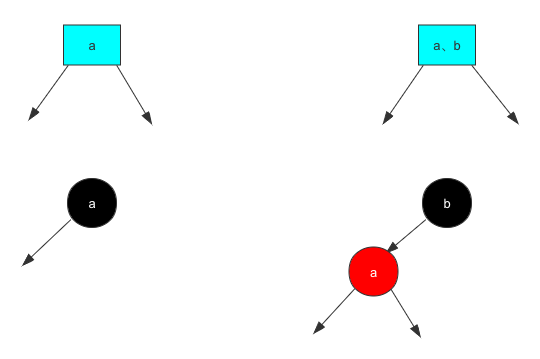
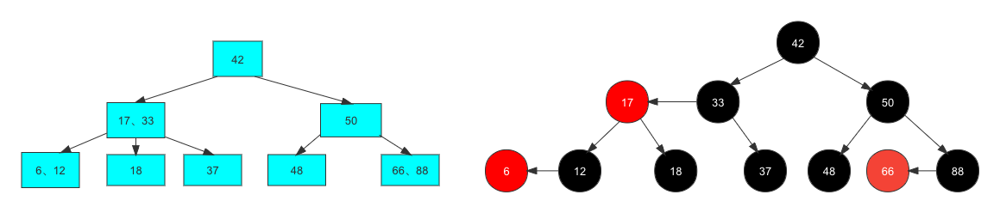
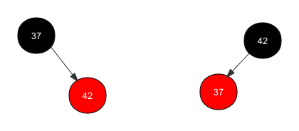
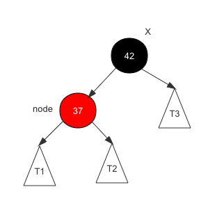
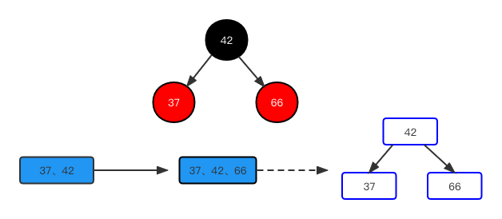
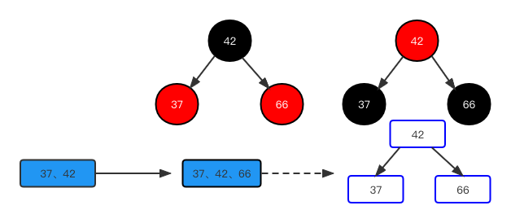
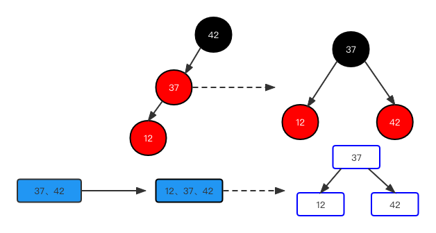
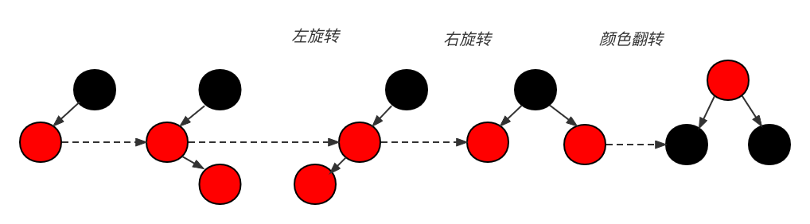

本文将从2-3树与红黑树的联系入手，详细解释红黑树的性质与代码实现，让各位清楚红黑树为何如此定义以及性质是如何推导出来的。本文需要前章2-3树的知识
[红黑树等价树2-3树]: http://www.icanfly.tech/2022/07/14/%E7%BA%A2%E9%BB%91%E6%A0%91%E7%AD%89%E4%BB%B7%E6%A0%912-3%E6%A0%91/
初见红黑树
引用<<算法导论>>一书，原文如下:
A red-black tree is a binary tree that satisfies the following red-black properties:
- Every node is either red or black.
- The root is black.
- Every leaf (NIL) is black.
- If a node is red, then both its children are black.
- For each node, all simple paths from the node to descendant leaves contain the
same number of black nodes.
红黑树的性质网上一搜一堆，包括操作也是，但关键是 这性质是怎么推得呢？为什么有这样的性质呢？我可以先记下这些性质，耐心往下看。
红黑树与2-3树的联系
让我们先回顾一下 2-3树 添加新元素时要注意的地方:
或者添加进2-节点，形成一个3-节点
或者添加进3-节点，暂时形成一个4-节点
我们可以看到，插入的新元素一定要先插入到叶子节点上，如果超过了3节点，再去调整，红黑树也是一颗树，它本质上上实在模仿2-3树，因为2-3这种插入及调整能保证绝对的平衡，红黑树也想实现这种类似的平衡，我们假设红黑树插入的元素，每次也是要插入到一个元素身上，再去考虑调整。
我们将2-3树与红黑树做一下类比:

我们观察此图，当在2-3树中插入第一个元素时，对应红黑树，也是插入一个元素，此元素默认颜色为黑色。当我们插入第二个元素时，我们说2-3树中，每插入一个元素，都是要插在一个元素身上的，对应红黑树，红黑树也想表达这种3节点的，但红黑树是用在内存的结构，也是基于BST的，一个节点只能有一个元素，那它怎么办，它只能拆分，并且这个地方定义，小的元素在下，拆在我的左孩子(这是定义，你要是不喜欢，可以定义一个红黑树2，让大的元素在小元素的右孩子身上)拆分之后，为了能表示 他们是处于在2-3树中同一个3节点的身份，可以让树枝是红色的来特殊标识一下，表示此节点与父亲节共同组成3节点，但实际上我们写过BST代码就知道了，其实树枝在代码里面就是那个next指针代替了，是没有具体实现类的，所以从实现的角度讲，从节点标识更容易实现，所以我们不妨将小元素节点来标识成红色，至此，一个简单的对应关系就出来了，我们看一下完整的一棵树

看完上图，是不是有一恍然大悟的感觉？我们再回过头来，看一下算法导论中提到的性质 ：
1. 每个节点要么黑，要么红，显然，对应2-3树中的2节点以及3节点中的右面那个元素是黑，3节点中小的那个是红的。
1. 跟元素是黑的，这个也简单，因为红元素的节点一定是有一个黑色节点的父亲，那根节点自然是父亲了。
1. 叶节点是黑的，这个地方是定义的关系，它把null定义为叶节点，这个不影响理解。
1. 如果一个节点是红色，则它的两个孩子是黑的。so easy，因为在2-3树中，一个3节点的孩子要么是2节点（一个元素，黑色代表）要么是3节点（父亲是黑，左孩子是红）。
1. 其实说的是，从根节点到任意一个叶节点(我们还是习惯的将最后一个非空节点视为叶节点 )路径上黑色节点的个数是固定的。我们对比2-3树就知道了，把红黑树看成一颗假象的2-3树，2-3树绝对平衡的，层数是固定的，而黑色节点恰巧代表了层数，所以这个路径上黑色节点树固定也不难理解哦。
插入调整
接下来我们考虑如何进行调整?，首先我们知道，插入的一个新元素，一定要先附着于一个叶子节点元素上，然后再去调整，因为相当于每个元素都要经过调整，我们可以先假设插入的新元素都是红色的节点，去调整。类似AVL的旋转操作，我们看一下红黑树的基本旋转操作，这些操作是红黑树的数据结构的基本操作。
基础操作

1
2
3
4
| node.right = x.left
x.left = node
x.color = node.color
node.color = RED
|

了解过AVL旋转实现的话，这个代码就很简单了。
左旋转实际是插入到一个2节点身上，下面我们重点看插入到3节点身上的形态及调整。

在42、37插入完成之后，我们又插入了66，对应如图，插入的元素因为要和叶节点绑定，所以默认插入为红色。红色代表与父亲元素是同一个节点，但此时在2-3树中是一个临时的4节点的状态，2-3树中要分裂调整如图示的结构，同理红黑树，我们也对应的表示成2-3树分裂后的结构即可,也就是3个2节点。

但要注意一点，虽然都是2节点，但是分裂出来之后父亲是划到上层去了，也是一个结合的节点，所以要标识为红色。红色就代表要调整。
1
2
3
| node.color = RED
node.left.color = BLACK
node.right.color = BLACK
|
右旋转也是插入到3节点中出现某种状态时需要调整的操作.
假设在插入42、37之后再插入一个12元素，显然这是一种临时的4节点状态，需要调整，目标是如图中的3节点状态，我们可先做一个右旋转操作（AVL中常规操作）

此时只是简单的右旋，还没到目标结构，但是注意看，这不正是颜色翻转要调整的状态吗？所以此时再调一次颜色翻转的操作即可。
1
2
3
4
| node.left = x.right
x.right = node
x.color = node.color
node.color = RED
|
完整示例
我们取一种最麻烦的状态做示例，来回顾整个调整过程，假设向一个3节点中插入一个中间大小的元素

代码实现
1
2
3
4
5
6
7
8
9
10
11
12
13
14
15
16
17
18
19
20
21
22
23
24
25
26
27
28
29
30
31
32
33
34
35
36
37
38
39
40
41
42
43
44
45
46
47
48
49
50
51
52
53
54
55
56
57
58
59
60
61
62
63
64
65
66
67
68
69
70
71
72
73
74
75
76
77
78
79
80
81
82
83
84
85
86
87
88
89
90
91
92
93
94
95
96
97
98
99
100
101
102
103
104
105
106
107
108
109
110
111
112
113
114
115
116
117
118
119
120
121
122
123
124
125
126
127
128
129
130
131
132
133
134
135
136
137
138
139
140
141
142
143
144
145
146
147
148
149
150
151
152
153
154
155
156
157
158
159
160
161
162
163
164
165
166
167
168
169
170
171
172
173
174
175
176
177
178
179
180
181
182
183
184
185
186
187
188
189
190
191
192
193
194
195
196
197
198
199
200
201
202
203
204
205
206
207
208
209
210
211
212
213
214
215
216
217
218
219
220
221
222
223
224
| import java.util.ArrayList;
public class RBTree<K extends Comparable<K>, V> {
private static final boolean RED = true;
private static final boolean BLACK = false;
private class Node{
public K key;
public V value;
public Node left, right;
public boolean color;
public Node(K key, V value){
this.key = key;
this.value = value;
left = null;
right = null;
color = RED;
}
}
private Node root;
private int size;
public RBTree(){
root = null;
size = 0;
}
public int getSize(){
return size;
}
public boolean isEmpty(){
return size == 0;
}
private boolean isRed(Node node){
if(node == null)
return BLACK;
return node.color;
}
private Node leftRotate(Node node){
Node x = node.right;
node.right = x.left;
x.left = node;
x.color = node.color;
node.color = RED;
return x;
}
private Node rightRotate(Node node){
Node x = node.left;
node.left = x.right;
x.right = node;
x.color = node.color;
node.color = RED;
return x;
}
private void flipColors(Node node){
node.color = RED;
node.left.color = BLACK;
node.right.color = BLACK;
}
public void add(K key, V value){
root = add(root, key, value);
root.color = BLACK;
}
private Node add(Node node, K key, V value){
if(node == null){
size ++;
return new Node(key, value);
}
if(key.compareTo(node.key) < 0)
node.left = add(node.left, key, value);
else if(key.compareTo(node.key) > 0)
node.right = add(node.right, key, value);
else
node.value = value;
if (isRed(node.right) && !isRed(node.left))
node = leftRotate(node);
if (isRed(node.left) && isRed(node.left.left))
node = rightRotate(node);
if (isRed(node.left) && isRed(node.right))
flipColors(node);
return node;
}
private Node getNode(Node node, K key){
if(node == null)
return null;
if(key.equals(node.key))
return node;
else if(key.compareTo(node.key) < 0)
return getNode(node.left, key);
else
return getNode(node.right, key);
}
public boolean contains(K key){
return getNode(root, key) != null;
}
public V get(K key){
Node node = getNode(root, key);
return node == null ? null : node.value;
}
public void set(K key, V newValue){
Node node = getNode(root, key);
if(node == null)
throw new IllegalArgumentException(key + " doesn't exist!");
node.value = newValue;
}
private Node minimum(Node node){
if(node.left == null)
return node;
return minimum(node.left);
}
private Node removeMin(Node node){
if(node.left == null){
Node rightNode = node.right;
node.right = null;
size --;
return rightNode;
}
node.left = removeMin(node.left);
return node;
}
public V remove(K key){
Node node = getNode(root, key);
if(node != null){
root = remove(root, key);
return node.value;
}
return null;
}
private Node remove(Node node, K key){
if( node == null )
return null;
if( key.compareTo(node.key) < 0 ){
node.left = remove(node.left , key);
return node;
}
else if(key.compareTo(node.key) > 0 ){
node.right = remove(node.right, key);
return node;
}
else{
if(node.left == null){
Node rightNode = node.right;
node.right = null;
size --;
return rightNode;
}
if(node.right == null){
Node leftNode = node.left;
node.left = null;
size --;
return leftNode;
}
Node successor = minimum(node.right);
successor.right = removeMin(node.right);
successor.left = node.left;
node.left = node.right = null;
return successor;
}
}
}
|
红黑树性质解释
前面已经解释性质来，这就不重复了。
总结
我们通过插入操作讲解了红黑树的调整及性质的推导，删除操作其实也是在BST操作之上添加调整，可能要更复杂一些但大致原理类似，调整的基础操作也是上面讲到的，相信仔细读完本篇之后对红黑树有一定的感觉了，接下来我们将红黑树、BST、AVL综合对比一下：
- 对于完全随机的数据，普通的二分搜索树很好用! 缺点:极端情况退化成链表(或者高度不平衡)
- 对于查询较多的使用情况，AVL树很好用!
- 红黑树牺牲了平衡性(21ogn的高度) 但是 统计性能更优(综合增删改查所有的操作)

This is copyright.